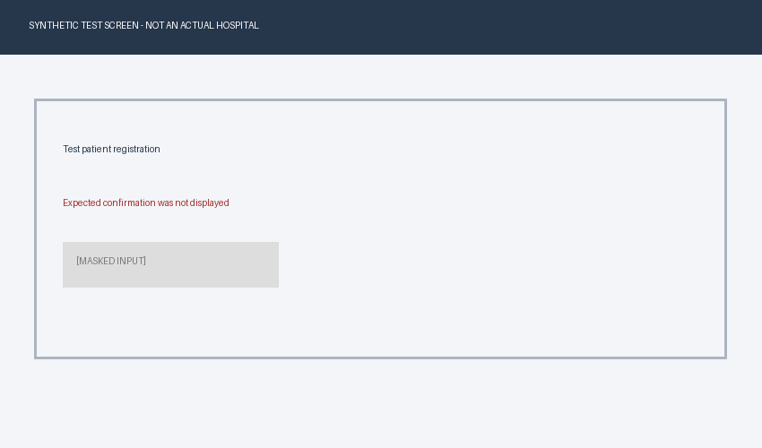

Environment local_demo (local) · mode read-only · 2026-10-30T00:00:00Z → 2026-10-30T00:00:05Z
Browser illustrative only · Python 3.11 · demonstration
Observed: Element not found within 1500 ms
Expected: Success confirmation after registering synthetic patient
Investigation suggestion, not a verified cause: Check the page URL, accessible label, selector stability, load timing and user permissions.
Affected: SYNTHETIC-OPD-001 step 2
| Workflow | App | Result | Approval | Risk | Writes | Reason |
|---|---|---|---|---|---|---|
| SYNTHETIC-OPD-001 Synthetic patient registration demonstration | hospital | FAIL | high | False | ||
| #1 goto 2026-10-30T00:00:01Z | PASS | Open registration page → Page opened | ||||
| #2 expect_visible 2026-10-30T00:00:04Z | FAIL | Success confirmation after registering synthetic patient → Confirmation did not appear Element not found within 1500 ms View failure screenshot  | ||||
| Id | App | Approval | Last result | Risk | Writes | Source | Not run because |
|---|
PASS = assertions ran and held. FAIL = an assertion failed or an error occurred. BLOCKED = a safety/approval/credential gate refused the run or a feature was not found. NOT VERIFIED = ran but the result is not trustworthy. NOT TESTED = intentionally not executed (dry-run, read-only mode, draft, earlier failure).